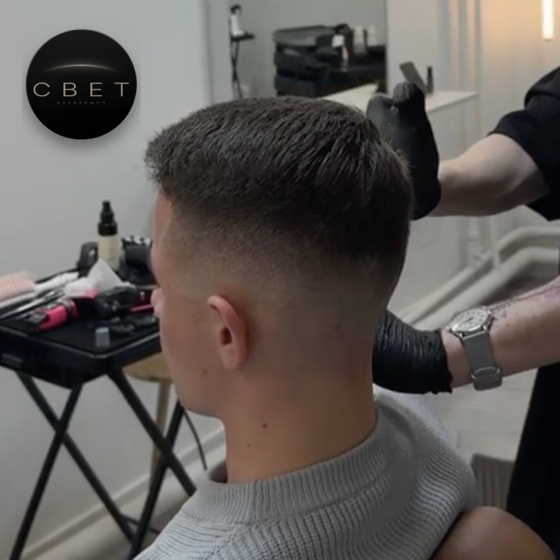

Мужская стрижка
2 500 ₽Не просто смена длины — форма, которая работает на тебя каждый день.
Подробнее →Мужская стрижка — не просто смена длины. Это разговор о форме, которая будет работать на тебя каждый день после.
В «Свете» стрижка начинается с диалога. Мастер смотрит на форму головы, густоту, характер роста — и только потом берёт инструменты. Работаем исключительно стерилизованными ножницами и машинками профессионального класса. Никаких компромиссов с инструментом.
Стрижка мужская в Москве давно стала массовым сервисом, где скорость важнее результата. Мы придерживаемся другого подхода: делаем так, чтобы форма держалась и через неделю, и через две. Если нужен совет по укладке или уходу — скажем.
Работаем в центре, рядом с метро Курская и Чкаловская. Тихий переулок, своя парковка, никакой суеты. Можно приехать без записи — просто оценить обстановку и выпить кофе.